ELE00102M: Physical Modelling Synthesis
Y3846756
Sound Synthesis Report
1. Introduction
Software implementations of physical models offer exceptional quality and expressivity when imitating real acoustic instruments [1]. These implementations replicate the causal interactions of vibrating systems and can accurately reproduce the idiosyncrasies and unique characteristics of an instrument [2]. Traditional physical modelling starts with differential equations of the mechanical systems and then discretises these using finite difference solutions. These work by splitting sections of the model into a 1D line, or 2D grid, and then approximating the value at each point based on values at neighbouring points [3].
A more computationally friendly alternative is the digital waveguide method. This method simulates the travelling waves of a system as opposed to a physical variable within the system [1]. The 1D digital waveguide for an ideal string can be demonstrated by first considering the differential wave equation for this ideal string:
$$\frac{\partial y(t, x)}{\partial t^2} = c^2\frac{\partial y(t, x)}{\partial x^2}$$
This can then be solved by the travelling wave solution:
$$y(t, x) = y^+(t - \frac{x}{c}) + y^-(t + \frac{x}{c})$$
where \(y^-\) and \(y^+\) denote the left and right travelling waves respectively. This can be discretised as:
where \(nT\) is the sampling interval, \(mX\) are the sampling points, \(X=cT\) and \(c≈343 m/s\). An example MATLAB implementation of this is shown in Figure 1, and the waves this produces is shown in Figure 2. An audio example of this can be heard in Table 1.

This is simple and efficient to implement in software using delay lines and was used in Yamaha’s VL1 synthesizer from 1993 [4]. There are also modern commercially available physical modelling synthesizers, such as Pianoteq, a virtual instrument targeted at modelling pianos [5].
| Description | Audio |
|---|---|
| Digital Waveguide Plucked String Example | |
| Yamaha VL1 Example [6] | |
| Pianoteq Example [7] |
The 1D digital waveguide has also been expanded to 2D and 3D models [8]. The 2D model for an ideal membrane takes several bi-directional delay lines and connects these together at lossless, 4-port scattering junctions [8]. A block diagram showing a section of a 2D digital waveguide mesh is shown in Figure 3.

Physical modelling synthesizers in the commercial space compete most directly with samplers. The primary advantage of physical models over samplers for acoustic instrument simulation is the flexibility of the parameters the player can control in the model, allowing for expressive performances and a wider range of timbral variety [1, 9]. Physical models also use little storage and have low RAM requirements when compared to industry standard sample libraries, such as Keyscape. Pianoteq requires just 50MB of storage space, compared to Keyscape’s 77GB, and just 256MB of RAM, compared to Keyscape’s minimum requirement of 8GB [10, 11, 12]. The biggest problem physical modelling synthesis faces is the complexity of designing efficient algorithms, particularly for realistic models of complex instruments with many parameters.
This article details the implementation of a physics inspired model of a resonated flute played in a virtual acoustic space. There will be analysis performed to determine the success of the implementation and verify its behaviour, as well as preset examples to demonstrate its range of sounds.
2. System
The resonated flute in the virtual acoustic space is built from 3 connected models. The modelled flute is based on the physical model for a slide flute, using the digital waveguide to synthesize travelling waves within the bore of the flute. The pitch is adjusted by modifying the length of the delay line, thus modifying the length of the bore. This model also features periodic amplitude modulation, or tremolo, to add to the realism of the sound. The model features four adjustable parameters which alter the timbre of the model: pressure, simulating how much pressure is blown into the flute; breath, simulating how much “breath” noise comes through the flute; attack time, which affects the onset time of the note; and tremolo depth, the level of fluctuation in amplitude. The block diagram for a basic digital waveguide implementation of a slide flute is shown in Figure 4.

The implementation detailed in this article expands this model by adding a flow envelope to control the noise input’s amplitude over time, as well as adding a third half-length delay line at the input of the system to simulate the delay of the player blowing across the mouthpiece of the flute [14]. This extended model is shown in Figure 5.

The flute is then convolved by the impulse response of a physically modelled 2D absorbing membrane. This membrane is modelled using the FDTD equation and simulates the acoustic pressure across the membrane in all directions. The model is implemented by considering the 2D differential wave equation:
and then discretising this using the FDTD method:
where \(u_{l,h}^n\) is the acoustic pressure at coordinate \((l,h)\) on the membrane at sample point \(n\), and \(A\), \(B\), and \(C\) are the absorption coefficients. The size of the membrane is adjustable, as well as the size and location of the excitation point, the position that the output is sampled from, and the boundary gain. Convolving the output of the flute signal with the impulse response of this effectively causes the sound of the flute to be resonated by the membrane. There is also a mix control which balances the mix between dry sound and the convolved signal.
The membrane’s output is then processed through a virtual acoustic space, implemented based on the Moorer reverb algorithm using comb and all-pass filters, and a tapped delay line for early reflections. The early reflection times and related gains can be adjusted, as well as the feedback of the comb filters, which control the reverberation time. There is also a mix control which balances the dry, direct sound with the reverberated signal. A diagram of this network is shown in Figure 6.

3. System Analysis and Verification
The individual sections of the system will now be heard and analysed, and the interactions between these shown. Table 2 has an audio snippet of the flute section of the model playing an A4 (440Hz) along with its corresponding spectrum.
| Audio | Waveform | Spectrogram |
|---|---|---|

|

|
This spectrum shows that the fundamental frequency lies in approximately the correct area of the spectrum for a 440Hz A4 but is roughly 20Hz flat. This is due to pitch quantization which occurs due to the integer length of the delay lines. In an ideal case, with fractional delay lines, the number of samples could be calculated as follows:
The total bore length is therefore the summation of both delay line lengths:
Then calculating the oscillation period based on twice the delay period [17]:
Then finally converting to metres and calculating the fundamental:
The harmonic series visible in the spectrum also matches that of a flute, where the harmonics are integer multiples of the fundamental frequency [18]. Table 3 shows the first 4 harmonics.
| Harmonic | Relation to Fundamental | Measured Frequency |
|---|---|---|
| 1st | \(f_0\) | 421.98 Hz |
| 2nd | \(2f_0\) | 843.96 Hz |
| 3rd | \(3f_0\) | 1265.93 Hz |
| 4th | \(4f_0\) | 1687.91 Hz |
The small levels of inharmonic frequencies across the spectrum show the noise from the breath input to the system.
The absorbing membrane’s plucked response can be heard in Table 4, along with the corresponding waveform and spectrum. This membrane has a length of 66cm and a width of 12cm, approximately matching the dimensions of a flute [19, 21].
| Audio | Waveform | Spectrogram |
|---|---|---|

|

|
The spectrum shown in Table 4 shows the resonant modes of the membrane through the repeated spikes. These values are shown in Table 5. These modes can be altered by changing the dimensions of the membrane, the position or size of the excitation, and the output position. The decay time of the membrane can also be adjusted by modifying the boundary gain of the model, with lower values giving longer decay times.
| Resonant Peak | Frequency |
|---|---|
| 1 | 216.85 Hz |
| 2 | 433.70 Hz |
| 3 | 656.41 Hz |
| 4 | 890.84 Hz |
| 5 | 1131.1 Hz |
When the output of the modelled flute is convolved with the membrane’s response, the frequency response is altered, boosting it at the resonant modes and attenuating it elsewhere. Figure 7 shows that the convolved signal’s frequency spectrum has a higher peak at the resonant frequency than the non-convolved signal, and lower values at other points on the membrane’s frequency response.

The third section of the system is the Moorer reverb implementation. An impulse response of a room 30 metres long and 20 metres wide can be seen and heard in Table 6, along with the isolated early reflections (ERs).
| Audio | Waveform | Early Reflections |
|---|---|---|

|

|
The isolated early reflections show the tapped delay line behaving as expected, with the reflections at the correct points in the time domain. The measured early reflection times are shown in Table 7, against the given early reflection times. The given times were calculated based on the delay times and approximate amplitudes gathered from [21].
| Given ER Time (ms) | Measured ER Time (ms) |
|---|---|
| 65.20 | 65.1889 |
| 81.90 | 81.8975 |
| 83.70 | 83.6892 |
| 85.80 | 85.7935 |
| 89.30 | 89.2935 |
| 103.2 | 103.190 |
| 104.7 | 104.690 |
| 106.1 | 106.086 |
| 107.5 | 107.502 |
| 116.6 | 116.586 |
| 131.000 | 131.003 |
| 233.500 | 233.521 |
Changing the early reflection times changes the size and shape of the room being simulated. Adjusting the comb filter feedback gain also has an impact on the perceived room size and can vastly affect the \(RT_{60}\) of the system. The \(RT_{60}\) can be estimated by plotting the impulse response normalized to 0dB, plotting a horizontal line at -60dB against this and then finding the point at which the amplitude does not rise above -60dB again. Figure 8 shows this plot for the simulated room, with the \(RT_{60}\) of approximately 845ms labelled.

The audio, waveform and spectrum of the fully connected system is shown in Table 8. The waveform shows the extended reverb tail and pre-delay occurring from the simulated room when compared to the waveform in Table 2, and the frequency response shows the adjustment compared to the spectrum shown in Table 2, whilst still maintaining the correct fundamental frequency.
| Audio | Waveform | Spectrogram |
|---|---|---|
| 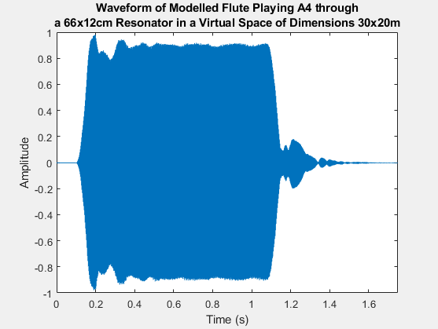 | 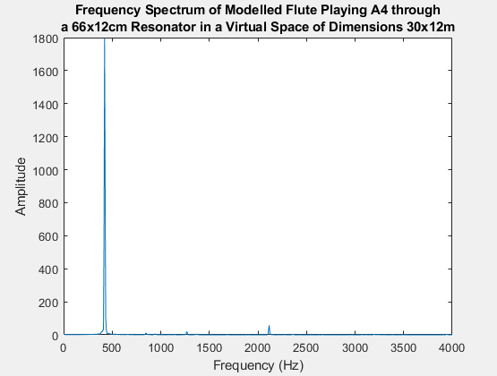 |
4. Presets
The presets are defined individually for each section of the system, enabling a wide range of sounds through different combinations. They are written as JavaScript Object Notation (JSON) files, and an example is shown in Figure 9.
A range of preset examples can be heard in Table 9 and are shown alongside their waveform and spectrum. For consistency, the model will always be playing a 440 Hz A4 with a duration of 1 second and a sample rate of 48kHz, with the dry to wet mix for the membrane and reverb set to 100% wet.
| Example | Audio | Waveform | Spectrogram |
|---|---|---|---|
| 1 |
"Breathy.json", "Flute.json", "SmallRoom.json" |
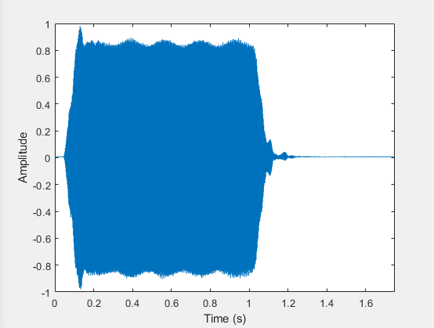 | 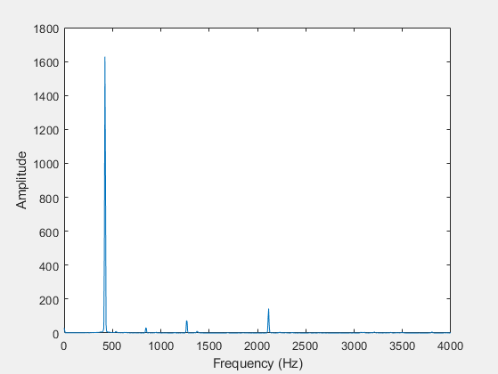 |
| 2 |
"Hard.json", "Flute.json", "SmallRoom.json" |
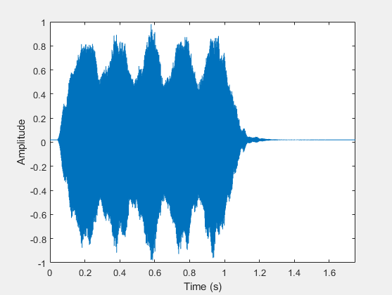 | 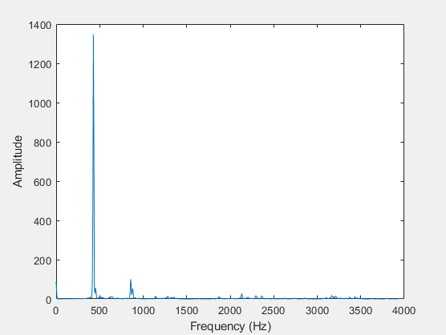 |
| 3 |
"Soft.json", "Flute.json", "SmallRoom.json" |
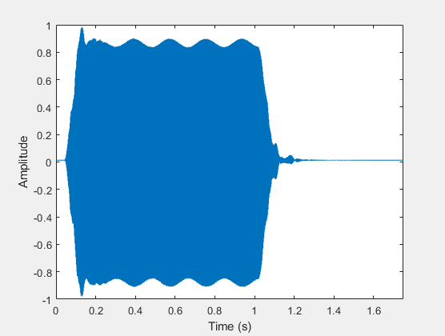 | 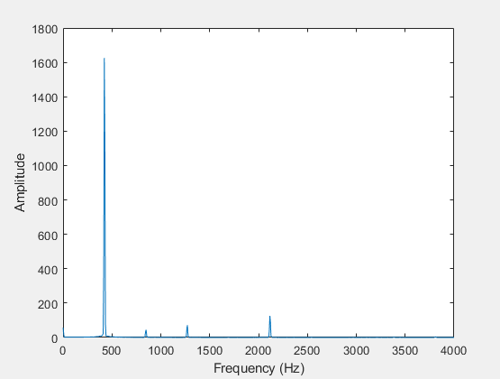 |
| 4 |
"Tremolo.json", "Flute.json", "SmallRoom.json" |
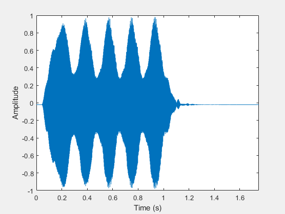 | 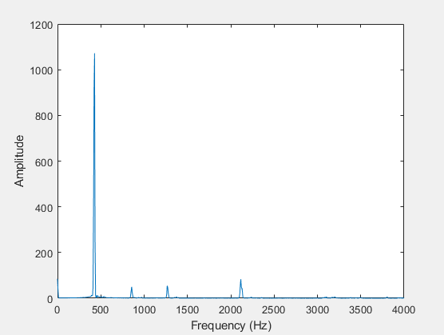 |
| 5 |
"Soft.json", "Guitar1.json", "SmallRoom.json" |
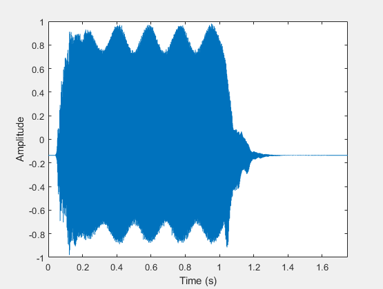 |

|
| 6 |
"Breathy.json", "HalfFlute.json", "BigRoom.json" |
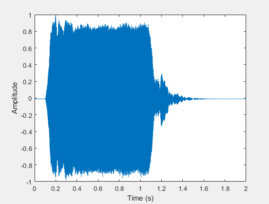 | 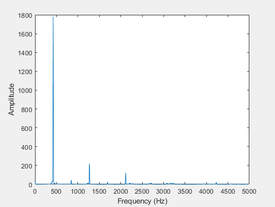 |
| 7 |
"Breathy.json", "HalfFlute.json" "YorkMinster.json" |
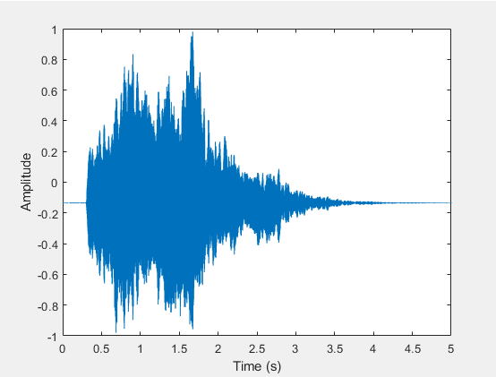 | 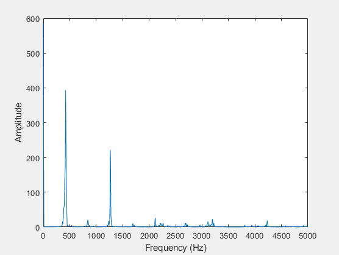 |
| 8 |
"Breathy.json", "HalfFlute.json", "SmallRoom.json" |
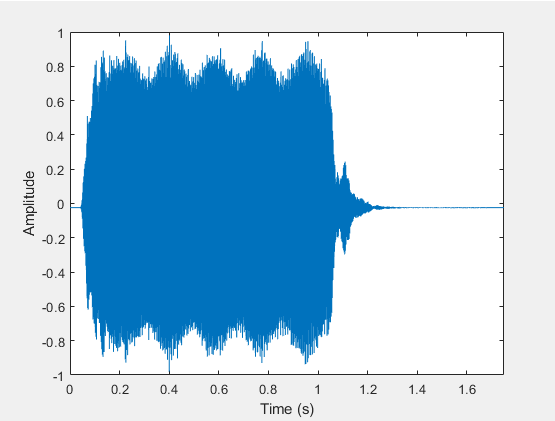 | 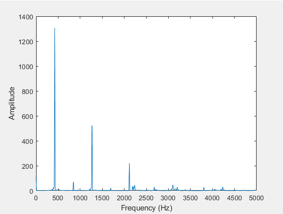 |
| 9 |
"Hard.json", "Plate.json", "SmallRoom.json" |

|
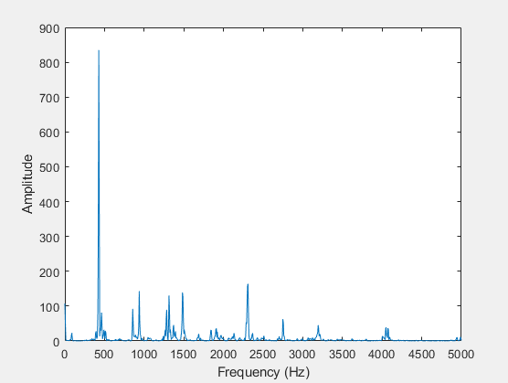 |
Example 5 shows how the timbre of the sound can be altered by modifying the size of the rectangular membrane, with the resonant modes significantly amplifying harmonics 2, 3 and 5 whilst the fundamental is attenuated. This gives a brighter sound with more mid-frequency content and sounds less like a real flute.
The waveforms in most examples clearly show the amplitude modulation from the tremolo, but when the tremolo depth is turned up in examples 2 and 4 this is especially pronounced. The frequency of the tremolo can also be measured from the waveform, by picking two peaks and calculating the period between them. Choosing peaks at 0.3835 seconds and 0.5648 seconds the frequency can then be calculated as:
This matches the system design, where the tremolo frequency is defined as 5.5 Hz.
The waveform of example 7 also clearly shows the increased decay time for a much larger simulated space, which matches the preset’s longer early reflection times and higher comb filter feedback, both which increase the \(RT_{60}\) of the reverberation.
5. Conclusion
The physics inspired models discussed in this article have been shown to have been effectively implemented within the system developed. Analysis of their outputs and interactions meet expectations based on their underpinning theory. Their ability to produce a wide variety of timbres by varying physically inspired parameters has been shown, and the range of examples demonstrated shows both the potential for realistic, musical flute sounds, as well as more unusual sounds.
The main limitation of the system is the pitch quantization which occurs in the flute model due to the integer quantization of the delay line length. This problem could be solved by using interpolated delay lines which would remove the pitch quantization [22]. These could also be used alongside fractional delay filters to simulate finger holes for smooth note transitions [22]. The reverb with early reflections could also be extended to more closely match the full Freeverb algorithm implementation by adding a second channel for stereo output. This could be achieved by duplicating the network in parallel and adding a value to each of the delay lines used in the network [23].
Word Count (excluding references, figures, tables and captions): 1975 words
6. References
- J. O. Smith, ‘Physical Modeling Using Digital Waveguides’, Computer Music Journal, vol. 16, no. 4, pp. 74–91, 1992.
- G. Loy, Musimathics, Volume 2. The MIT Press, 2007.
- M. N. O. Sadiku, Numerical Techniques in Electromagnetics. CRC Press, 2000.
- Stanford University News Service, ‘Music synthesis approaches sound quality of real instruments’, 1994 [Online]. Available: https://news.stanford.edu/pr/94/940607Arc4222.html.
- Modartt, Modartt - Pianoteq 7. [Online]. Available: https://www.modartt.com/pianoteq. [Accessed: 29 Dec. 2020].
- musictrackjp, YAMAHA VL1 Demo & Review. [Online]. Available: https://www.youtube.com/watch?v=OYWxCrz3vmQ. [Accessed: 05 Jan. 2021].
- Modartt, Modartt - Steinway Model D grand piano. [Online]. Available: https://www.modartt.com/modeld. [Accessed: 05 Jan. 2021].
- S. Van Duyne and J. O. Smith, ‘The 2-D digital waveguide mesh’, in Proceedings of IEEE Workshop on Applications of Signal Processing to Audio and Acoustics, 1993, pp. 177–180.
- R. Rabenstein and L. Trautmann, ‘Digital sound synthesis by physical modelling’, in ISPA 2001. Proceedings of the 2nd International Symposium on Image and Signal Processing and Analysis. In conjunction with 23rd International Conference on Information Technology Interfaces (IEEE Cat., 2001, pp. 12–23.
- Modartt, Modartt - F.A.Q. [Online]. Available: https://www.modartt.com/faq. [Accessed: 30 Dec. 2020].
- Spectrasonics - Keyscape - FAQ. [Online]. Available: https://www.spectrasonics.net/products/keyscape/keyscape-faq.php. [Accessed: 30 Dec. 2020].
- Spectrasonics - Keyscape - Collector Keyboards. [Online]. Available: https://www.spectrasonics.net/products/keyscape/index.php. [Accessed: 30 Dec. 2020].
- E. J. Berdahl and J. O. Smith III, ‘Virtual Flute’, Stanford University [Online]. Available: https://ccrma.stanford.edu/realsimple/vir_flute/vir_flute.pdf.
- D. T. Murphy, “Physical Modelling Synthesis: Practical Exercise 9”, University of York [Online].
- J. A. Moorer, ‘About This Reverberation Business’, Computer Music Journal, vol. 3, no. 2, pp. 13–28, 1979.
- D. T. Murphy, “Physical Modelling Synthesis: Practical Exercise 11e”, University of York [Online].
- Hui Wu and A. Hajimiri, ‘Silicon-based distributed voltage-controlled oscillators’, IEEE J. Solid-State Circuits, vol. 36, no. 3, pp. 493–502, Mar. 2001.
- C. Schmidt-Jones, “Standing Waves and Wind Instruments” in Sound, Physics and Music. 2004.
- C. Goss, Flute Crafting Dimensions. [Online]. Available: https://www.flutopedia.com/dimensions.htm. [Accessed: 03 Jan. 2021].
- HyperPhysics, Flute. [Online]. Available: http://hyperphysics.phy-astr.gsu.edu/hbase/Music/flute.html. [Accessed: 03 Jan. 2021].
- A. Melcher, Amray - The Raytracing Sketchpad. [Online]. Available: https://amcoustics.com/tools/amray. [Accessed: 03 Jan. 2021].
- R. Hänninen and V. Välimäki, ‘An improved digital waveguide model of a flute with fractional delay filters’, Proc. Nordic Acoustical Meeting (NAM’96): 437, 1996[Online]. Available: http://citeseerx.ist.psu.edu/viewdoc/download?doi=10.1.1.51.6916&rep=rep1&type=pdf.
- J. O. Smith, ‘Freeverb’, in Physical Audio Signal Processing, Center for Computer Research in Music and Acoustics (CCRMA), 2010 [Online]. Available: https://ccrma.stanford.edu/~jos/pasp/Freeverb.html.